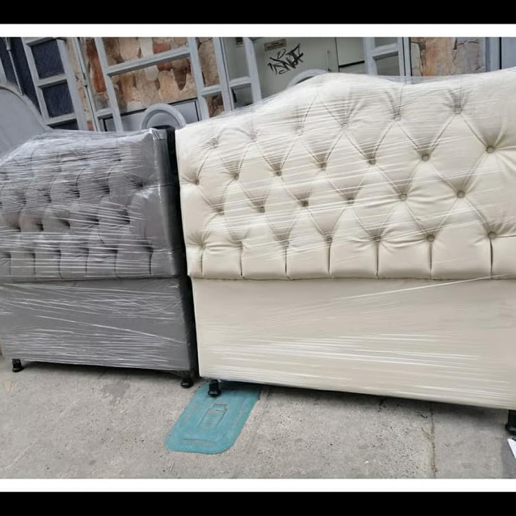

<div class="background">
  <main class="work-content">
    <div style="float: left; width: 20%">
      <h1>¿Quiénes Somos?</h1>
    </div>
    <span class="body">
      R Savilla SAS es una sociedad por acciones simplificadas matriculada el
      martes 15 de marzo de 2016 en la cámara de comercio de Bogotá. Esta
      empresa se dedica principalmente a comercio al por mayor de desperdicios,
      desechos y chatarra.
    </span>

    <!--   <section class="picture-grid">
      <div class="image-wrapper shadow-image flex flex-column justify-content-between">
          
      </div>
      <div class="image-wrapper shadow-image flex flex-column justify-content-between">
          
      </div>
      <div class="image-wrapper shadow-image flex flex-column justify-content-between">
          
      </div>
  </section> -->
    <section>
      <div class="content">
        <div class="img-logo">
          
        </div>
        <div class="mision" style="float: left; width: 20%">
          <h1>Misión</h1>
          <span class="body">
            Contribuir en la recuperación de la madera y afines, aportando en la
            preservación del medio ambiente y los recursos naturales, realizando
            y ejecutando proyectos que surjan desde un pensamiento ecológico y
            sostenible, en beneficio de las personas y el entorno, de manera
            normativa, con calidad y ambiente de familia.
          </span>
        </div>
        <div style="float: left; width: 20%">
          <h1>Visión</h1>
          <span class="body">
            Ser una empresa sostenible en la recuperación y nuevo uso de la
            madera y afines, preocupada por conservar el ambiente, con
            desarrollo económico, construyendo una conciencia humanista y
            ambientalista, que reconozca la obra de Dios en el cuidado del
            planeta.
          </span>
        </div>
      </div>
    </section>

    <div
      class="card flex flex-column gap-3 justify-content-center align-items-center"
    >
      <p-paginator
        [first]="first"
        [rows]="1"
        [totalRecords]="12"
        (onPageChange)="onPageChange($event)"
        [showJumpToPageDropdown]="true"
        [showPageLinks]="false"
      ></p-paginator>
      
    </div>
  </main>
</div>
